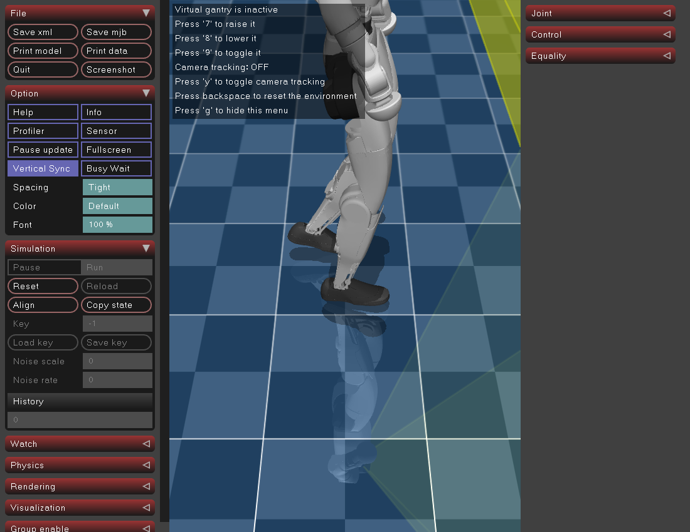
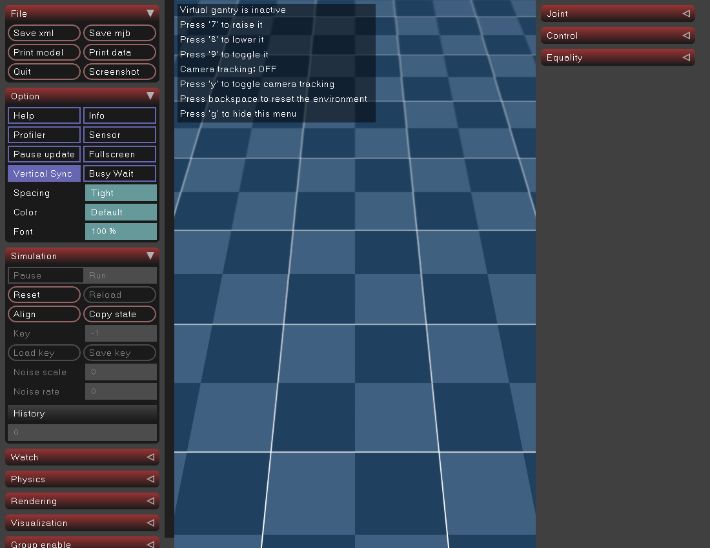
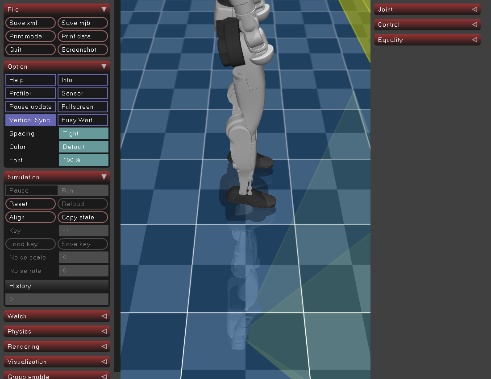
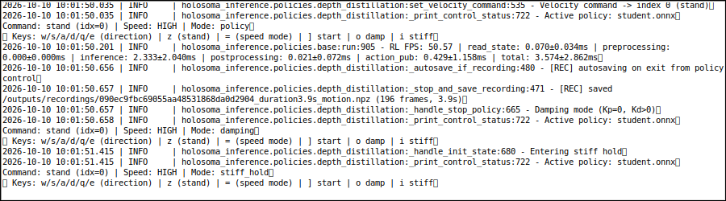

保留其它原始截图（包括高速时地板空画面）




第五次运行完成单个G1平地接口验收。所有媒体为原字节复制；四次失败完整保留。不是障碍通关、策略质量或实机证明。




| 尝试 | 真实状态 / 边界 | 原始证据 |
|---|---|---|
| 01-auth-failed | failed — Private Python-Xlib authorization failed; no native workers constructed | summary · host退出 · 原manifest |
| 02-settle-failed | failed — 1000 physics ticks not reached inside original12wall-second deadline; no keys yet | summary · host退出 · 原manifest |
| 03-terminal-failed | failed — MuJoCo8/9 acknowledged; Tk logical focus missing, XTEST ] produced no PTY byte | summary · host退出 · 原manifest |
| 04-native-exit-failed | failed — All interface actions/recordings completed; simulator allocator abort after atexit, wrapper1 | summary · host退出 · 原manifest |
| 05-egl-completed | completed — Same native interface workflow with EGL offscreen; both original mains returned and actual wrappers0 | summary · host退出 · 原manifest |
正常结束通过向精确出生身份绑定的原生Python进程发送SIGINT，保留原处理路径；Esc仅停止键盘listener，不能代替策略停止。单因素EGL对照不能保证所有heap问题已消失。